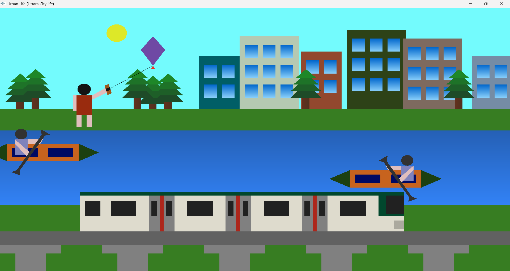
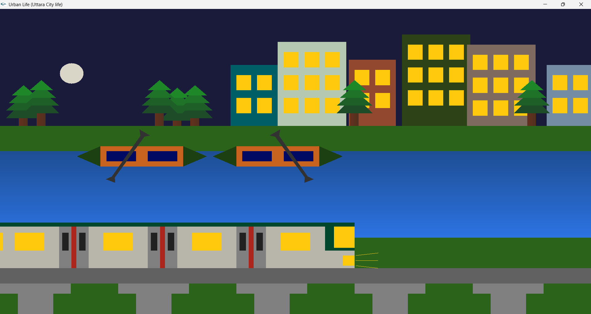
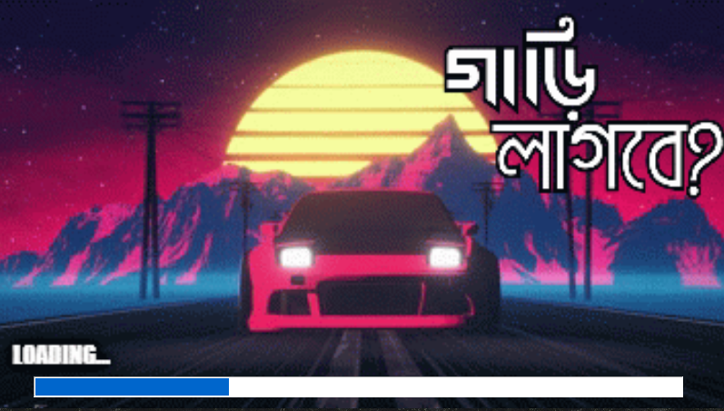
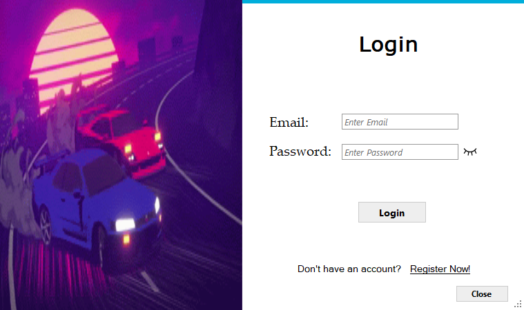
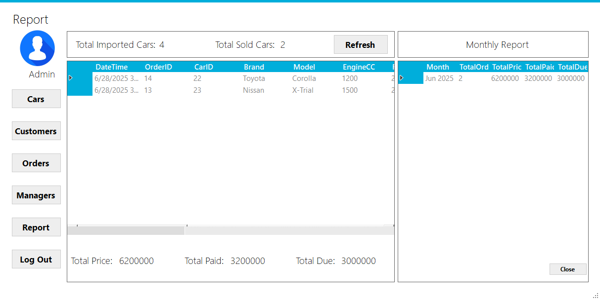
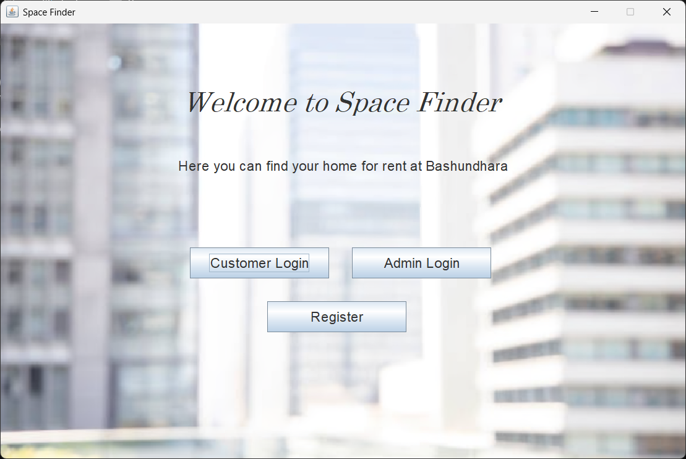
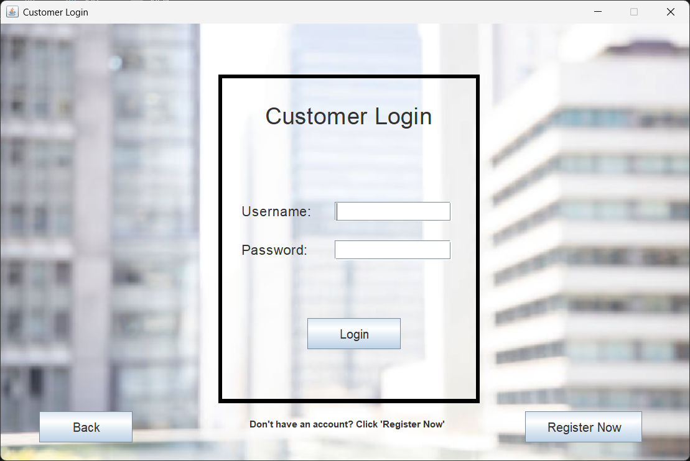

Description: A 2D urban city life animation developed using C++, OpenGL, and GLUT, inspired by real-life riverside city environments. The scene includes residential buildings, trees, a flowing river with two kayaking boats moving in opposite directions, and a metro rail traveling across an elevated track. The project focuses on object modeling, transformation, and smooth animation techniques.
The system features interactive Day and Night modes. During the day, the sun appears, boats move continuously, and a character flies a kite controlled by keyboard input. At night, the sky darkens, the moon appears, building windows illuminate, metro headlights turn on, and boat movement stops automatically to simulate a realistic nighttime environment.
Skills Used: C++, OpenGL, GLUT, 2D Graphics, Animation, Object Movement, Keyboard Interaction



Description:A C# and Microsoft SQL Server–based Car Shop Management System designed to streamline the overall sales and customer management process. The system allows customers to register, browse available cars, place orders, and track payments efficiently.
On the administrative side, managers can monitor orders, update vehicle information, and manage payment records through a centralized dashboard. The platform also supports user role management, sales reporting, and data storage using relational database structures, ensuring organized and secure transaction handling.
Skills Used: C#, Microsoft SQL Server


Description:A Java-based Estate Management System developed to simplify property rental management for apartments and office spaces. The system enables users to create accounts, browse available properties, and request bookings through a structured interface.
Administrators can add, update, or remove property listings, manage user accounts, and monitor rental activities efficiently. The project focuses on structured programming, user interaction, and basic system design principles, providing a clear understanding of backend logic and application workflow.
Skills Used: Java